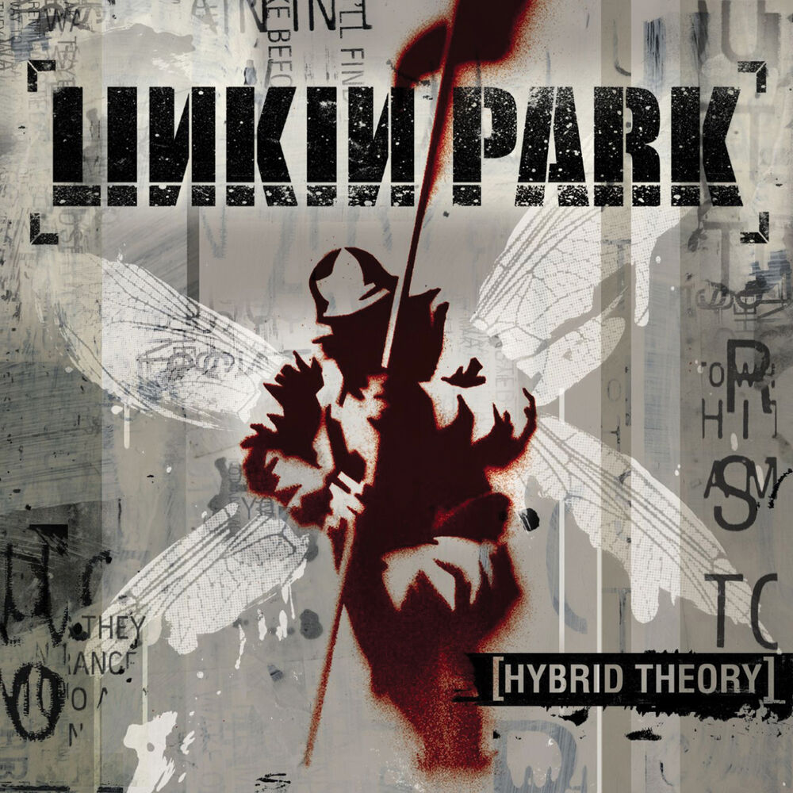

Papercut

Lyrics
Why does it feel like night today?
Something in here's not right today
Why am I so uptight today?
Paranoia's all I got left
I don't know what stressed me first
Or how the pressure was fed / but
I know just what it feels like
To have a voice in the back of my head
It's like a face that I hold inside
A face that awakes when I close my eyes
A face watches every time I lie
A face that laughs every time I fall
[And watches everything]
So I know that when it's time to sink or swim
That the face inside is hearing me / right underneath my skin
It's like I'm / paranoid lookin' over my back
It's like a / whirlwind inside of my head
It's like I / can't stop what I'm hearing within
It's like the face inside is right beneath my skin
I know I've got a face in me
Points out all my mistakes to me
You've got a face on the inside too and
Your paranoia's probably worse
I don't know what set me off first but I know what I can't stand
Everybody acts like the fact of the matter is
I can't add up to what you can
But everybody has a face that they hold inside
A face that awakes when they close their eyes
A face watches every time they lie
A face that laughs every time they fall
[And watches everything]
So you know that when it's time to sink or swim
That the face inside is watching you too / right inside your skin
It's like I'm / paranoid lookin' over my back
It's like a / whirlwind inside of my head
It's like I / can't stop what I'm hearing within
It's like the face inside is right beneath my skin
It's like I'm / paranoid lookin' over my back
It's like a / whirlwind inside of my head
It's like I / can't stop what I'm hearing within
It's like the face inside is right beneath my skin
The face inside is right beneath your skin
The face inside is right beneath your skin
The face inside is right beneath your skin
The sun goes down
I feel the light betray me
The sun goes down
I feel the light betray me
(The sun...)
It's like I'm / paranoid lookin' over my back
It's like a / whirlwind inside of my head
It's like I / can't stop what I'm hearing within
(I feel the light betray me...)
It's like the face inside is right beneath my skin
(The sun...)
It's like I'm / paranoid lookin' over my back
It's like a / whirlwind inside of my head
It's like I / can't stop what I'm hearing within
(I feel the light betray me...)
It's like I / can't stop what I'm hearing within
(The sun...)
It's like I / can't stop what I'm hearing within
It's like the face inside is right beneath my skin